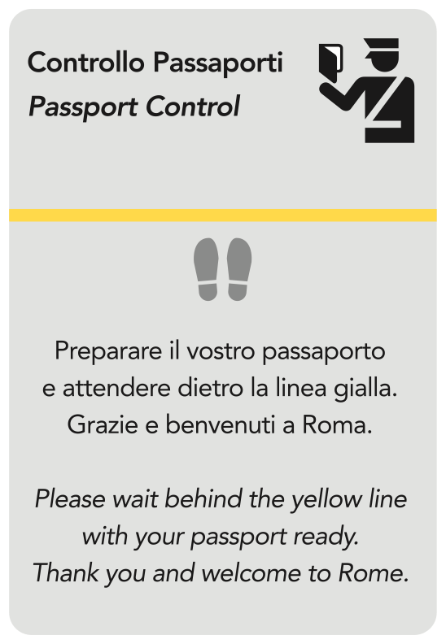

In the photo on the right you will see one of the very first signs you will be welcomed by, as you land in Rome airport. A shabby A4 sheet, straight out of some laser printer, with text poorly written both in Italian and in English, set in Comic Sans. It is a sign meant to provide straightforward information about the proper procedure when going through passport control.
But its design feature tells more than that: never mind the suggestion to wait on the yellow line, which is of course perpendicular to the queue; above all this poorly designed sign tells the visitors that when designing for public spaces in Rome anything goes and nobody cares about proportions, readability and beauty. The images below are a remediation proposal for intervention. Note: the pictogram in the revised layout comes from a set of 50 passenger/pedestrian symbols developed by AIGA, and it is available for all to use, free of charge. Signs are available in EPS and GIF formats at: AIGA symbol signs"
 Image credit: GP.